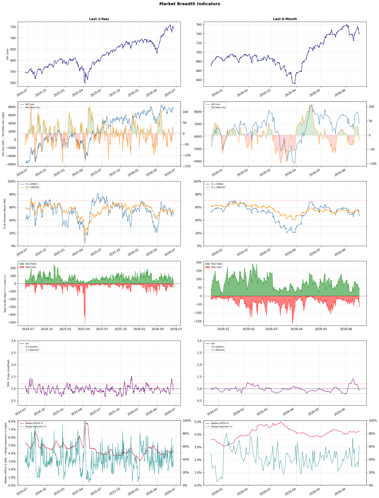

A daily market breadth and sector rotation report for active investors
| Item | Read |
|---|---|
| Regime downgraded | Selective Risk-On → Neutral |
| Regime | Neutral |
| Risk posture | Cautious |
| Universe | 1,345 stocks tracked · 42 new 52-week highs · 30 active swing setups |
| Breadth | only 47.8% of tracked stocks are above SMA50, new lows exceed new highs (60 vs 42), McClellan oscillator (breadth momentum) is negative at -21.5 |
| Leadership | Computer Hardware, Electronic Components, and Semiconductor Equipment & Materials |
| Weakest groups | Financial Data & Stock Exchanges, Agricultural Inputs, and Oil & Gas E&P |
Use this report to prioritize research and chart review; validate entries, stops, liquidity, earnings, and risk before acting.
| Item | Read |
|---|---|
| Primary read | Neutral regime with Cautious risk posture. |
| Research queue | STX, DELL, WDC, VELO, UMAC |
| Leadership focus | Computer Hardware, Electronic Components, and Semiconductor Equipment & Materials |
| Caution list | Financial Data & Stock Exchanges, Agricultural Inputs, and Oil & Gas E&P |
| Review prompt | Check extension risk, chart location, fundamentals, valuation, and earnings before using any research row. |
| Item | Read |
|---|---|
| Primary read | 4 active risk warnings; use screen output as watchlist input only. |
| Bullish screens | WDC, IONQ, BNS, TD, MRNA |
| Bearish screens | TTD, WIX, MAT |
| Alerts / levels | Automated trigger, stop, ATR, liquidity, reward/risk, and event-risk levels are pending future enrichment. |
| Review prompt | Open the linked chart, define trigger and invalidation, then check liquidity and event risk independently. |
Risk Posture: Cautious — screen backdrop is selective; prioritize research in top-ranked groups
Metric context: McClellan below -50 = elevated selling pressure; below -100 = washout territory. Range Expansion = share of stocks with daily range above their 20-day average. Signal Density = share of tracked names appearing in signal screens.
| Breadth Date | % > SMA50 | % > SMA200 | New Highs | New Lows | McClellan | Median Range | Avg Range | Median ATR14 | Range Expansion | Signal Density |
|---|---|---|---|---|---|---|---|---|---|---|
| 2026-06-17 | 47.8% | 53.2% | 42 | 60 | -21.5 | 4.3% | 4.9% | 4.3% | 61.5% | 13.9% |

Regime downgraded: Selective Risk-On → Neutral
Prior comparison date: June 16, 2026
| Metric | Prior | Current | Change |
|---|---|---|---|
| Regime | Selective Risk-On | Neutral | changed |
| Risk Posture | Selective | Cautious | changed |
| % > SMA50 | 54.0% | 47.8% | -6.2 pts |
| % > SMA200 | 55.6% | 53.2% | -2.4 pts |
| New Highs | 44 | 42 | -2 |
| New Lows | 16 | 60 | -44 |
Top-10 industries entering: Electrical Equipment & Parts. Top-10 industries leaving: Advertising Agencies. New multi-signal long setups: BFLY, BTSG, CIFR, ENPH, GS, HWM, IONQ, JBLU, JPM. New multi-signal short setups: MAT.
| Status | Tickers | Read |
|---|---|---|
| Added | BFLY, BTSG, CIFR, ENPH, GS, HWM, IONQ, JBLU | New technical screen matches vs prior report. |
| Removed | ALL, AMKR, CI, CRSR, D, FOXA, GTX, HIMX | No longer present in today's technical screen matches. |
| Still Active | BEN, BNS, EMR, GE, MS, NBIS, TGTX, VIRT | Appeared in both current and prior reports. |
| Promoted | TGTX | Model Screen Score improved by at least 15 points. |
| Downgraded | none | Model Screen Score declined by at least 15 points. |
| Direction | Industry | ETF | Prior Rank | Current Rank | Days | Rank Change |
|---|---|---|---|---|---|---|
| Rose | Footwear & Accessories | N/A | 94 | 18 | 35 | +76 |
| Rose | Copper | COPX | 88 | 12 | 7 | +76 |
| Rose | Airlines | N/A | 73 | 5 | 35 | +68 |
| Rose | Advertising Agencies | N/A | 79 | 11 | 35 | +68 |
| Rose | Building Products & Equipment | XHB | 92 | 25 | 28 | +67 |
Bull: The Footwear & Accessories industry is experiencing rising relative strength due to favorable macroeconomic trends and consumer behavior shifts that are driving growth in retail apparel and footwear stocks. Recent headlines highlight a growing optimism around key players, such as Birkenstock and Deckers Outdoor, suggesting that innovative product offerings and strategic buybacks are enhancing investor confidence, while reports of stocks poised for industry growth indicate a robust demand for footwear and apparel as consumers prioritize comfort and style in their purchases. This combination of positive sentiment and strong market positioning is likely fueling the industry's upward trajectory.
Bear: While the recent headlines suggest optimism in the Footwear & Accessories industry, this bullish sentiment may overlook several critical headwinds. Rising inflation and economic uncertainty could dampen consumer spending on discretionary items, including footwear and apparel, as households prioritize essential goods. Additionally, the industry's reliance on innovative product offerings may not be sufficient to counteract the potential for supply chain disruptions and increased production costs, which could erode margins and hinder overall growth.
Verdict: The Footwear & Accessories industry's rising strength is primarily driven by favorable macroeconomic conditions and a shift in consumer preferences towards comfort and style, bolstered by innovative product offerings from key players like Birkenstock and Deckers Outdoor. However, investors should remain cautious of potential headwinds, including rising inflation and supply chain disruptions, which could negatively impact consumer spending and profit margins in the sector. To capitalize on this trend, focus on companies with strong brand loyalty and effective supply chain management.
Sources: Google News
Bull: Copper is experiencing rising relative strength primarily due to its critical role in the transition to alternative energy and the ongoing AI boom, as highlighted in the headlines discussing the "Grid Resilience Boom" and the competition between copper, gold, and silver. Additionally, the significant return of 156% over the past year, coupled with a substantial yield of 9.7%, indicates strong investor confidence and demand for copper assets, further driven by market themes such as AI and commodities that are shaping the future of manufacturing and infrastructure.
Bear: While the bullish case for copper highlights its role in the transition to alternative energy and AI, it overlooks the significant risks posed by a potential slowdown in global manufacturing, which could drastically reduce demand for copper. Additionally, the impressive 156% return over the past year may be unsustainable, driven more by speculative trading than fundamental demand, suggesting that investors should be cautious about relying on past performance as an indicator of future growth. Furthermore, the high yield of 9.7% may not be sustainable if companies face rising costs or declining revenues in a weakening economic environment.
Verdict: Copper's rising strength is fundamentally driven by its essential role in the transition to alternative energy and advancements in AI, which are fueling robust demand in manufacturing and infrastructure. However, investors should remain cautious of the potential risks posed by a slowdown in global manufacturing, which could significantly diminish copper demand and challenge the sustainability of its recent impressive returns.
Sources: Yahoo Finance, Google News
Bull: The rising relative strength of the Airlines sector can be attributed to a combination of robust demand recovery post-pandemic and improving operational efficiencies, which are highlighted by recent positive analyses from sources like Zacks Investment Research, suggesting that there are still compelling buying opportunities in airline stocks. Additionally, despite some pressures indicated by headlines such as Delta's stock dip and sector-wide profit warnings, the overall trend remains bullish as investors remain optimistic about the long-term growth prospects of the industry, particularly as travel demand continues to rebound. This optimism is further supported by articles from Barchart.com and Investor's Business Daily, which suggest that certain airlines, like United, are outperforming broader industrial benchmarks, indicating a sector poised for continued strength.
Bear: While the rising relative strength of the Airlines sector may seem promising, it is essential to consider the underlying vulnerabilities, particularly the recent sector-wide profit warnings that signal potential overcapacity and declining margins. Additionally, the dip in Delta Air Lines stock highlights that even industry leaders are not immune to market pressures, suggesting that investor optimism may be misplaced and driven more by short-term demand spikes rather than sustainable long-term growth. With rising fuel costs and economic uncertainties looming, the airline industry's recovery could be more fragile than bullish analysts suggest.
Verdict: The airline industry's rising strength is primarily driven by a robust recovery in travel demand post-pandemic, coupled with improving operational efficiencies that have attracted investor interest. However, key risks remain, particularly from sector-wide profit warnings and rising fuel costs, which could indicate potential overcapacity and declining margins, suggesting that while short-term optimism is prevalent, the industry's long-term sustainability may be more precarious than it appears. Investors should proceed with caution and consider these vulnerabilities when evaluating airline stocks.
Sources: Google News
Bull: The Advertising Agencies sector is experiencing a rising relative strength primarily due to its strategic embrace of artificial intelligence, as highlighted by multiple sources. Headlines from Bloomberg and Morningstar indicate that ad agencies are leveraging AI technologies to enhance efficiency and effectiveness, positioning themselves to capitalize on the disruption in the industry. Additionally, strong earnings reports, such as those from MediaAlpha, suggest robust financial performance within the sector, further reinforcing investor confidence and driving upward momentum.
Bear: While the adoption of AI in the advertising sector is indeed a significant trend, it may not be a panacea for the underlying challenges facing ad agencies, such as increasing competition from tech giants and the potential for diminishing returns on ad spend as consumer behavior evolves. Furthermore, the strong earnings reports from select companies like MediaAlpha may not be indicative of the broader industry's health, as they could be outliers rather than a reflection of sustainable growth across the sector. Investors should remain cautious, as the hype surrounding AI could lead to overvaluation and volatility once the initial excitement subsides.
Verdict: The Advertising Agencies sector is experiencing a rising relative strength primarily due to its strategic embrace of artificial intelligence, as highlighted by multiple sources. Headlines from Bloomberg and Morningstar indicate that ad agencies are leveraging AI technologies to enhance efficiency and effectiveness, positioning themselves to capitalize on the disruption in the industry. Additionally, strong earnings reports, such as those from MediaAlpha, suggest robust financial performance within the sector, further reinforcing investor confidence and driving upward momentum.
Sources: Google News
Bull: The Building Products & Equipment industry is experiencing a rise in relative strength primarily due to a rebound in the housing market, as suggested by headlines like "Is Lennar Finally Turning the Corner After Its Housing Slump?" and "How Is PulteGroup’s Stock Performance Compared to Other Homebuilder Stocks?" This renewed interest in homebuilding, coupled with concerns about potential mortgage rate spikes highlighted in the ITB investor headline, indicates a growing demand for construction materials and equipment, positioning the sector favorably for continued growth. Additionally, the mention of strong performances in home construction materials stocks, such as Quanex, further underscores the positive momentum in this industry.
Bear: While the recent headlines suggest a rebound in the housing market, it’s crucial to consider that the broader economic environment remains fraught with uncertainty, particularly with looming mortgage rate spikes that could dampen buyer sentiment and affordability. Furthermore, the performance of individual companies like Lennar and PulteGroup may not reflect a sustainable recovery across the entire sector, as many builders still face significant challenges such as rising labor costs, supply chain disruptions, and potential regulatory hurdles. These factors could hinder the anticipated growth in demand for construction materials and equipment, making the bullish outlook overly optimistic.
Verdict: The Building Products & Equipment industry is likely experiencing a rebound due to increased activity in the housing market, driven by renewed consumer interest and a potential surge in home construction, which boosts demand for construction materials and equipment. However, key risks remain, particularly from rising mortgage rates and economic uncertainties that could dampen buyer sentiment and affordability, potentially undermining the sustainability of this growth. Investors should closely monitor mortgage rate trends and broader economic indicators to gauge the longevity of this positive momentum.
Sources: Yahoo Finance, Google News
| Direction | Industry | ETF | Prior Rank | Current Rank | Days | Rank Change |
|---|---|---|---|---|---|---|
| Fell | Oil & Gas Refining & Marketing | CRAK | 19 | 83 | 42 | -64 |
| Fell | Chemicals | N/A | 13 | 77 | 35 | -64 |
| Fell | Oil & Gas E&P | XOP | 25 | 86 | 28 | -61 |
| Fell | Oil & Gas Midstream | AMLP | 12 | 72 | 35 | -60 |
| Fell | Oil & Gas Equipment & Services | XES | 6 | 66 | 35 | -60 |
Bear: While the bull analyst attributes the sector's relative weakness primarily to demand concerns, it's crucial to recognize that the recent 52-week high for the Oil Refiners ETF (CRAK) may be misleading, as it fails to account for the underlying volatility and uncertainty in the oil market, particularly amid geopolitical tensions. Furthermore, the narrative of "hopes for Middle East de-escalation" could quickly reverse, leading to renewed supply disruptions and exacerbating refining margins, which are already under pressure from fluctuating crude prices and potential regulatory changes aimed at reducing fossil fuel reliance. Thus, the current bullish sentiment may be overly optimistic, ignoring significant headwinds that could negatively impact the sector's profitability and sustainability.
Bull: The relative weakness in the Oil & Gas Refining & Marketing sector can largely be attributed to concerns over demand, as highlighted by the headlines discussing "Oil to Slip on Demand Woes" and the mixed outlook on oil prices driven by supply risks. Additionally, while the sector has recently hit a 52-week high, the broader market sentiment appears cautious, likely influenced by geopolitical tensions and hopes for Middle East de-escalation, which can create volatility in oil prices and impact refining margins.
Verdict: The Oil & Gas Refining & Marketing sector's recent downturn is primarily driven by concerns over demand, exacerbated by geopolitical tensions and the potential for renewed supply disruptions. The key risk highlighted by the bear case is the volatility in crude prices and the possibility of regulatory changes aimed at reducing fossil fuel reliance, which could further pressure refining margins and hinder profitability. Investors should remain cautious and closely monitor geopolitical developments and regulatory trends before making investment decisions in this sector.
Sources: Yahoo Finance, Google News
Bear: While the bull analyst highlights macroeconomic pressures and geopolitical tensions as key factors affecting the chemicals sector, these challenges may actually exacerbate underlying issues such as overcapacity and pricing pressures within the industry. Furthermore, the focus on coal chemicals in China indicates a potential shift towards less environmentally sustainable practices, which could lead to increased regulatory scrutiny and long-term sustainability concerns, ultimately dampening investor sentiment and hindering growth prospects for traditional chemical companies.
Bull: The Chemicals sector is experiencing a relative strength decline primarily due to macroeconomic pressures and competitive dynamics highlighted in recent headlines. The ongoing geopolitical tensions, such as the Iran war impacting petrochemical competitors, could be leading to volatility and uncertainty in the market, which may deter investment in the sector. Additionally, while the broader basic materials sector is soaring, the specific challenges faced by chemical companies, as indicated by the focus on coal chemicals in China, suggest a shift in investor sentiment away from traditional chemical stocks toward more resilient segments of the market.
Verdict: The chemicals sector's decline is primarily driven by macroeconomic pressures, geopolitical tensions, and a shift in investor sentiment towards more resilient segments, as evidenced by the challenges faced by traditional chemical companies. However, the bear case highlights a critical risk of overcapacity and pricing pressures, compounded by a potential regulatory backlash against less sustainable practices like coal chemicals in China, which could further hinder growth and investor confidence in the sector. Investors should closely monitor these dynamics and consider diversifying into more sustainable and resilient alternatives within the broader materials market.
Sources: Google News
Bear: While the bull analyst highlights volatility and supply constraints as key factors, the reality is that the oil and gas sector is facing significant long-term headwinds that could undermine its recovery. These include increasing regulatory pressures for cleaner energy, the accelerating transition to renewable energy sources, and potential demand destruction due to economic slowdowns or shifts in consumer behavior. Additionally, the recent spike in crude oil prices may not be sustainable, as it often leads to increased production from alternative sources, which can further exacerbate supply risks and depress prices in the long run.
Bull: The Oil & Gas E&P sector is experiencing a relative strength decline primarily due to recent volatility in crude oil prices, highlighted by the $114 spike and ongoing supply constraints, which create uncertainty for investors. Additionally, the headlines indicate a pullback in energy ETFs despite the potential for gains, suggesting that market sentiment is cautious amid geopolitical tensions and elusive peace deals, which have led to fluctuating oil prices and concerns about sustained demand. This environment may be prompting investors to seek safer or more stable opportunities outside the energy sector, contributing to the relative weakness in Oil & Gas E&P stocks.
Verdict: The Oil & Gas E&P sector is currently experiencing a decline due to heightened volatility in crude oil prices and ongoing supply constraints, which have fostered investor uncertainty and a cautious market sentiment. Key risks from the bear case include increasing regulatory pressures for cleaner energy and the potential for demand destruction from economic slowdowns, which could hinder any recovery in the sector. Investors should remain vigilant and consider diversifying their portfolios to mitigate exposure to these long-term headwinds.
Sources: Yahoo Finance, Google News
Bear: While the bull analyst highlights the allure of upstream investments due to rising crude oil prices, this overlooks the inherent volatility and risk associated with those stocks, especially in a potentially recessionary environment where demand for oil could wane. Additionally, the midstream sector is facing significant headwinds from increasing regulatory scrutiny, environmental concerns, and the ongoing transition to renewable energy sources, which could dampen long-term growth prospects and investor confidence in these traditionally stable income-generating assets. As such, the shift in investor sentiment may not be as favorable for midstream companies as suggested, potentially leading to sustained underperformance in the sector.
Bull: The Oil & Gas Midstream sector is experiencing a decline in relative strength primarily due to the recent spike in crude oil prices to $114, which has shifted investor focus towards upstream and exploration companies that directly benefit from rising oil prices. Additionally, the headlines indicate a growing interest in high-yield MLP ETFs and pipeline income, suggesting that while midstream may be seen as a stable investment, the immediate allure of higher returns in upstream investments is drawing capital away from midstream assets. This dynamic reflects a broader market sentiment favoring direct exposure to crude oil price fluctuations over the more stable, but potentially less explosive, returns offered by midstream companies.
Verdict: The Oil & Gas Midstream sector's decline is primarily driven by investor preference shifting towards upstream companies that benefit directly from rising crude oil prices, which recently spiked to $114. However, this shift carries the risk of overlooking the inherent volatility and potential demand downturns in upstream investments, especially in a recessionary environment. Investors should remain cautious, as increasing regulatory scrutiny and the transition to renewable energy could further undermine midstream growth prospects, suggesting a need for careful evaluation of midstream assets in the current market landscape.
Sources: Yahoo Finance, Google News
Bear: While the bull analyst highlights potential opportunities within the sector, the declining relative strength trend of the SPDR S&P Oil & Gas Equipment & Services ETF (XES) suggests that investor sentiment is increasingly cautious, reflecting deeper concerns about the sustainability of oil price increases amid global economic uncertainties and the ongoing shift towards renewable energy. Additionally, the emphasis on indirect investment strategies indicates a lack of confidence in direct exposure to oil and gas services, as investors may be wary of potential oversupply and regulatory pressures that could further suppress traditional oil and gas demand, undermining the long-term viability of companies in this sector.
Bull: The Oil & Gas Equipment & Services sector, represented by the SPDR S&P Oil & Gas Equipment & Services ETF (XES), is likely experiencing a decline in relative strength due to broader market concerns about oil price volatility and potential oversupply, as suggested by the recent headlines discussing the surge in oil prices and the need for indirect investment strategies. Additionally, the focus on companies like Halliburton and TechnipFMC in the Zacks Industry Outlook indicates that while some firms may have strong fundamentals, the overall sector sentiment may be dampened by geopolitical uncertainties and the transition towards renewable energy sources, which could be impacting investor confidence in traditional oil and gas services.
Verdict: The Oil & Gas Equipment & Services sector is facing a fundamental decline primarily due to heightened investor concerns over oil price volatility and the potential for oversupply, exacerbated by geopolitical uncertainties and the accelerating shift towards renewable energy. The key risk highlighted by the bear thesis is the growing lack of confidence in traditional oil and gas demand, which could lead to regulatory pressures and further suppress the sector's long-term viability. Investors should consider diversifying their portfolios to include renewable energy and indirect investment strategies to mitigate these risks.
Sources: Yahoo Finance, Google News
| Industry | Rank | ETF | 7d | 14d | 28d | 42d | Chg 42d | Size | 20D | 60D | Composite | Active Setups |
|---|---|---|---|---|---|---|---|---|---|---|---|---|
| Computer Hardware | 1 | XLK | 7 | 2 | 6 | 2 | +1 | 15 | 30.8% | 72.9% | 0.969 | 1 |
| Electronic Components | 2 | XLK | 8 | 3 | 7 | 4 | +2 | 10 | 16.2% | 62.9% | 0.944 | 0 |
| Semiconductor Equipment & Materials | 3 | SOXX | 22 | 11 | 11 | 3 | 0 | 17 | 23.5% | 66.2% | 0.939 | 0 |
| Semiconductors | 4 | SOXX | 5 | 1 | 1 | 1 | -3 | 38 | 14.1% | 99.0% | 0.919 | 1 |
| Airlines | 5 | N/A | 32 | 24 | 47 | 68 | +63 | 8 | 27.8% | 31.0% | 0.897 | 1 |
| REIT - Hotel & Motel | 6 | XLRE | 2 | 8 | 4 | 12 | +6 | 9 | 17.1% | 31.5% | 0.894 | 0 |
| Healthcare Plans | 7 | IHF | 3 | 12 | 3 | 10 | +3 | 10 | 11.2% | 68.9% | 0.883 | 1 |
| Electrical Equipment & Parts | 8 | XLI | 36 | 7 | 13 | 5 | -3 | 12 | 10.6% | 51.5% | 0.850 | 1 |
| REIT - Office | 9 | XLRE | 4 | 13 | 19 | 22 | +13 | 8 | 11.3% | 37.0% | 0.838 | 0 |
| Banks - Diversified | 10 | N/A | 15 | 17 | 17 | 37 | +27 | 16 | 11.1% | 22.2% | 0.835 | 1 |
Rank columns (7d–42d) show the industry's rank that many trading days ago — lower is stronger. Chg 42d = rank change vs 42 trading days ago — positive means the industry moved up. 20D and 60D are the mean stock return within the industry over that period. Active Setups: count of today's swing-trade candidates from this industry appearing across all signal screens.
| Industry | Rank | ETF | 7d | 14d | 28d | 42d | Chg 42d | Size | 20D | 60D | Composite | Active Setups |
|---|---|---|---|---|---|---|---|---|---|---|---|---|
| Financial Data & Stock Exchanges | 88 | N/A | 93 | 96 | 69 | 85 | -3 | 7 | -12.0% | -10.7% | 0.052 | 0 |
| Agricultural Inputs | 87 | N/A | 94 | 84 | 62 | 80 | -7 | 5 | -6.1% | -9.3% | 0.133 | 0 |
| Oil & Gas E&P | 86 | XOP | 62 | 67 | 25 | 54 | -32 | 26 | -15.8% | -12.4% | 0.139 | 0 |
| Insurance Brokers | 85 | N/A | 43 | 86 | 75 | 97 | +12 | 6 | -4.3% | -6.1% | 0.185 | 0 |
| Auto Manufacturers | 84 | N/A | 92 | 38 | 91 | 96 | +12 | 10 | -1.4% | -7.8% | 0.210 | 1 |
| Oil & Gas Refining & Marketing | 83 | CRAK | 53 | 55 | 23 | 19 | -64 | 7 | -11.0% | -7.1% | 0.230 | 0 |
| Discount Stores | 82 | XRT | 49 | 85 | 65 | 86 | +4 | 7 | -2.1% | -4.8% | 0.239 | 0 |
| Packaged Foods | 81 | XLP | 74 | 97 | 97 | 93 | +12 | 20 | 0.9% | -9.5% | 0.241 | 0 |
| Telecom Services | 80 | N/A | 76 | 64 | 55 | 65 | -15 | 20 | -4.8% | -0.7% | 0.250 | 0 |
| Software - Application | 79 | IGV | 51 | 42 | 49 | 58 | -21 | 75 | -2.4% | 2.3% | 0.260 | 1 |
Rank columns (7d–42d) show the industry's rank that many trading days ago — lower is stronger. Chg 42d = rank change vs 42 trading days ago — positive means the industry moved up. 20D and 60D are the mean stock return within the industry over that period. Active Setups: count of today's swing-trade candidates from this industry appearing across all signal screens.
These are research candidates from top-ranked stocks, capped at five names per industry to avoid over-concentration. Returns shown (60D, 120D, 250D) are historical — they reflect where prices have already moved, not forward expectations. Extension Risk flags names that may require extra patience or a better entry point. They are not buy signals.
Chart: TV = TradingView chart (opens in browser); PDF = local chart file (if downloaded).
| Ticker | Name | Industry | Industry Rank | Market Cap | 60D Hist | 120D Hist | 250D Hist | Extension Risk | Research Reason | Chart |
|---|---|---|---|---|---|---|---|---|---|---|
| STX | Seagate Technology | Computer Hardware | 1 | N/A | 163.9% | 277.0% | 711.9% | Very extended | Top-ranked in industry; very extended | TV |
| DELL | Dell Technologies | Computer Hardware | 1 | N/A | 154.8% | 228.6% | 259.7% | Very extended | Top-ranked in industry; very extended | TV |
| WDC | Western Digital | Computer Hardware | 1 | N/A | 141.6% | 299.5% | 1103.1% | Very extended | Top-ranked in industry; very extended | TV |
| VELO | Velo3D | Computer Hardware | 1 | N/A | 93.5% | 71.4% | 224.6% | Extended | Top-ranked in industry; extended | TV |
| UMAC | Unusual Machines | Computer Hardware | 1 | N/A | 52.9% | 87.9% | 171.4% | Extended | Top-ranked in industry; extended | TV |
| FLEX | Flex Ltd | Electronic Components | 2 | N/A | 120.1% | 124.6% | 209.9% | Very extended | Top-ranked in industry; very extended | TV |
| TTMI | TTM Technologies | Electronic Components | 2 | N/A | 99.9% | 183.1% | 448.3% | Extended | Top-ranked in industry; extended | TV |
| OUST | Ouster | Electronic Components | 2 | N/A | 92.3% | 79.8% | 100.2% | Extended | Top-ranked in industry; extended | TV |
| RAL | Ralliant | Electronic Components | 2 | N/A | 59.0% | 30.3% | 41.5% | Extended | Top-ranked in industry; extended | TV |
| APH | Amphenol | Electronic Components | 2 | N/A | 23.3% | 17.5% | 72.4% | Constructive | Top-ranked in industry | TV |
| AEHR | Aehr Test Systems | Semiconductor Equipment & Materials | 3 | N/A | 203.1% | 394.6% | 878.5% | Very extended | Top-ranked in industry; very extended | TV |
| VECO | Veeco Instruments | Semiconductor Equipment & Materials | 3 | N/A | 139.8% | 156.2% | 274.6% | Very extended | Top-ranked in industry; very extended | TV |
| COHU | Cohu Inc | Semiconductor Equipment & Materials | 3 | N/A | 116.4% | 175.6% | 260.0% | Very extended | Top-ranked in industry; very extended | TV |
| ACMR | ACM Research | Semiconductor Equipment & Materials | 3 | N/A | 114.6% | 141.2% | 281.9% | Very extended | Top-ranked in industry; very extended | TV |
| AMAT | Applied Materials | Semiconductor Equipment & Materials | 3 | N/A | 63.9% | 127.8% | 243.0% | Extended | Top-ranked in industry; extended | TV |
| VSH | Vishay Intertechnology | Semiconductors | 4 | N/A | 245.5% | 303.3% | 290.5% | Very extended | Top-ranked in industry; very extended | TV |
| MRVL | Marvell Technology | Semiconductors | 4 | N/A | 221.1% | 230.2% | 286.3% | Very extended | Top-ranked in industry; very extended | TV |
| ARM | Arm Holdings | Semiconductors | 4 | N/A | 206.0% | 273.9% | 186.8% | Very extended | Top-ranked in industry; very extended | TV |
| ALAB | Astera Labs | Semiconductors | 4 | N/A | 202.5% | 121.9% | 276.4% | Very extended | Top-ranked in industry; very extended | TV |
| MU | Micron Technology | Semiconductors | 4 | N/A | 158.0% | 277.6% | 756.3% | Very extended | Top-ranked in industry; very extended | TV |
These are technical screen matches from existing signal files. They are not trade recommendations. Trigger, stop, ATR, liquidity, reward/risk, and event risk still require separate validation until those inputs are available.
Model Screen Score is weighted by signal count, industry rank, freshness, and setup type. It is not a probability of profit, expected return, or suitability rating. Industry cap: max 3 candidates per industry.
Signal glossary: Momentum Pullback = stock in an uptrend that has pulled back 10–30% and shows re-entry conditions. MA Compression = short- and long-term moving averages converging, often preceding a directional move. Three-Day Up/Down = three consecutive closes in the same direction. New 52Wk High/Low = price reached a new annual extreme.
Chart: TV = TradingView chart (opens in browser); PDF = local chart file (if downloaded).
| Ticker | Industry | Setups | Close | Industry Rank | Signal Count | Model Screen Score | Reason | Chart |
|---|---|---|---|---|---|---|---|---|
| WDC | Computer Hardware | New 52Wk High; Three-Day Up | 712.13 | 1 | 2 | 100 | Multi-signal; top industry breakout | TV |
| IONQ | Computer Hardware | Momentum Pullback | 54.69 | 1 | 2 | 85 | Multi-signal; top industry pullback | TV |
| BNS | Banks - Diversified | New 52Wk High; Three-Day Up | 86.37 | 10 | 2 | 85 | Multi-signal; top industry breakout | TV |
| TD | Banks - Diversified | New 52Wk High; Three-Day Up | 118.50 | 10 | 2 | 85 | Multi-signal; top industry breakout | TV |
| MRNA | Biotechnology | New 52Wk High; Three-Day Up | 61.80 | 15 | 2 | 85 | Multi-signal; new-high strength | TV |
| MRVI | Biotechnology | New 52Wk High; Three-Day Up | 5.22 | 15 | 2 | 85 | Multi-signal; new-high strength | TV |
| TGTX | Biotechnology | New 52Wk High; Three-Day Up | 51.50 | 15 | 2 | 85 | Multi-signal; new-high strength | TV |
| JPM | Banks - Diversified | MA Compression; Three-Day Up | 333.46 | 10 | 2 | 80 | Multi-signal; top industry setup | TV |
| NTRA | Diagnostics & Research | MA Compression; Three-Day Up | 226.44 | 13 | 2 | 80 | Multi-signal; compression setup | TV |
| POET | Semiconductors | Momentum Pullback | 11.95 | 4 | 2 | 78 | Multi-signal; top industry pullback | TV |
| JBLU | Airlines | Momentum Pullback | 5.13 | 5 | 2 | 78 | Multi-signal; top industry pullback | TV |
| BTSG | Health Information Services | New 52Wk High; Three-Day Up | 64.43 | 19 | 2 | 77 | Multi-signal; new-high strength | TV |
| GS | Capital Markets | New 52Wk High; Three-Day Up | 1099.14 | 23 | 2 | 77 | Multi-signal; new-high strength | TV |
| MS | Capital Markets | New 52Wk High; Three-Day Up | 224.96 | 23 | 2 | 77 | Multi-signal; new-high strength | TV |
| VIRT | Capital Markets | New 52Wk High; Three-Day Up | 60.67 | 23 | 2 | 77 | Multi-signal; new-high strength | TV |
| MFG | Banks - Regional | New 52Wk High; Three-Day Up | 10.14 | 27 | 2 | 70 | Multi-signal; new-high strength | TV |
| WBS | Banks - Regional | New 52Wk High; Three-Day Up | 75.01 | 27 | 2 | 70 | Multi-signal; new-high strength | TV |
| RXT | Software - Infrastructure | New 52Wk High; Three-Day Up | 7.53 | 28 | 2 | 70 | Multi-signal; new-high strength | TV |
| BEN | Asset Management | New 52Wk High; Three-Day Up | 33.29 | 54 | 2 | 65 | Multi-signal; new-high strength | TV |
| BFLY | Medical Devices | New 52Wk High; Three-Day Up | 5.71 | 56 | 2 | 65 | Multi-signal; new-high strength | TV |
| GE | Aerospace & Defense | New 52Wk High; Three-Day Up | 357.03 | 58 | 2 | 65 | Multi-signal; new-high strength | TV |
| HWM | Aerospace & Defense | New 52Wk High; Three-Day Up | 283.23 | 58 | 2 | 65 | Multi-signal; new-high strength | TV |
| EMR | Specialty Industrial Machinery | MA Compression; Three-Day Up | 149.00 | 57 | 2 | 60 | Multi-signal; compression setup | TV |
| ENPH | Solar | Momentum Pullback | 47.78 | 26 | 2 | 55 | Multi-signal; pullback setup | TV |
| SHLS | Solar | Momentum Pullback | 9.44 | 26 | 2 | 55 | Multi-signal; pullback setup | TV |
| CIFR | Information Technology Services | New 52Wk High; Three-Day Up | 26.35 | 61 | 2 | 55 | Multi-signal; new-high strength | TV |
| NBIS | Internet Content & Information | New 52Wk High; Three-Day Up | 280.91 | 63 | 2 | 55 | Multi-signal; new-high strength | TV |
Bearish setups — stocks making new lows or showing persistent downside patterns. Validate carefully before acting.
| Ticker | Industry | Setups | Close | Industry Rank | Signal Count | Model Screen Score | Reason | Chart |
|---|---|---|---|---|---|---|---|---|
| TTD | Advertising Agencies | New 52Wk Low; Three-Day Down | 18.16 | 11 | 2 | 55 | Multi-signal; new-low weakness | TV |
| WIX | Software - Infrastructure | New 52Wk Low; Three-Day Down | 42.05 | 28 | 2 | 40 | Multi-signal; new-low weakness | TV |
| MAT | Leisure | New 52Wk Low; Three-Day Down | 13.67 | 34 | 2 | 40 | Multi-signal; new-low weakness | TV |
How To Use This Report
| Use | Purpose |
|---|---|
| Market map | Start with breadth, regime, risk warnings, and what changed since the prior report. |
| Industry scan | Use leading, deteriorating, rising, and declining industries to focus research. |
| Research queue | Treat long-term candidates as names for deeper fundamental, valuation, and chart review. |
| Technical review | Treat bullish and bearish screen matches as watchlist inputs that require independent trigger, stop, liquidity, and event-risk checks. |
| Source follow-up | Use chart links and source files to verify raw inputs before relying on any row. |
What This Report Is Not
| Not | Meaning |
|---|---|
| Investment advice | The report does not evaluate personal objectives, risk tolerance, tax situation, account type, or suitability. |
| Buy/sell recommendation | Named tickers are research candidates or screen matches, not recommendations to transact. |
| Price target | The report does not provide fair value estimates, targets, or expected returns. |
| Trade plan | Trigger, stop, sizing, reward/risk, liquidity, and event-risk review remain separate user work. |
| Performance claim | Model Screen Score is not validated historical performance or a forecast of future results. |
| Item | Note |
|---|---|
| Version | Daily Report Methodology v1 |
| Model Screen Score | Screen-fit rank based on signal count, industry rank, freshness, and setup type. |
| Not predictive proof | The score is not expected return, probability of profit, historical validation, or suitability analysis. |
| Industry ranks | Composite industry ranks use existing daily ranking outputs and historical rank columns when available. |
| Research candidates | Long-term rows are research candidates from ranked stocks and leading industries, with historical returns labeled as historical only. |
| Technical matches | Bullish and bearish rows are screen matches requiring independent chart, trigger, stop, liquidity, and event-risk review. |
| Source | Status | Rows | Path |
|---|---|---|---|
| Market breadth | present | 1254 | breadth_20260617.csv |
| Industry composite rankings | present | 88 | all_industry_composite_20260617.csv |
| Top ranked stocks | present | 143 | top_ranked_composite_20260617.csv |
| All ranked stocks | present | 1345 | all_stocks_composite_sorted_20260617.csv |
| Top momentum pullbacks | present | 1497 | top_momentum_pullbacks_20260617.csv |
| MA compression | present | 1497 | ma_compression_stocks_20260617.csv |
| Three-day up/down | present | 218 | three_day_up_down_stocks_20260617.csv |
| New 52-week members | present | 102 | breadth_new_52wk_members_20260617.csv |
This report is generated from automated technical screens and is for informational and research purposes only. It is not investment advice, a solicitation, or a recommendation to buy or sell any security. Past performance is not indicative of future results. You are solely responsible for your own investment decisions. Consult a licensed financial advisor before acting on any information herein.